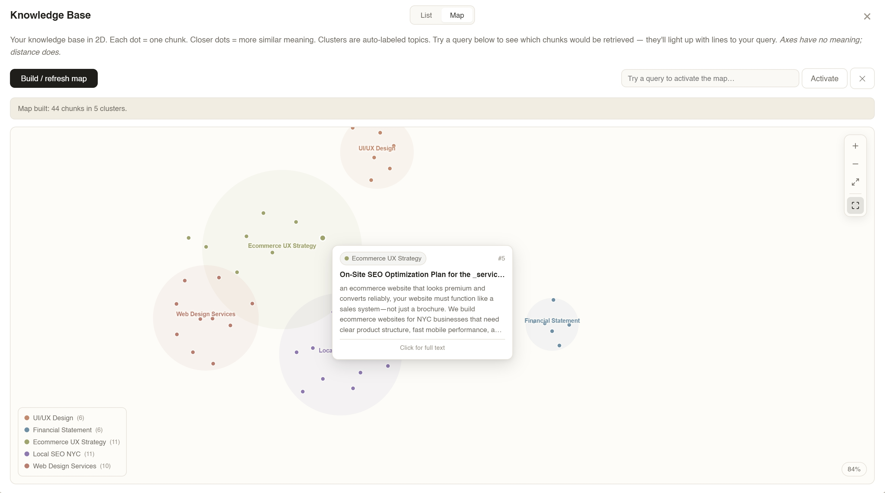
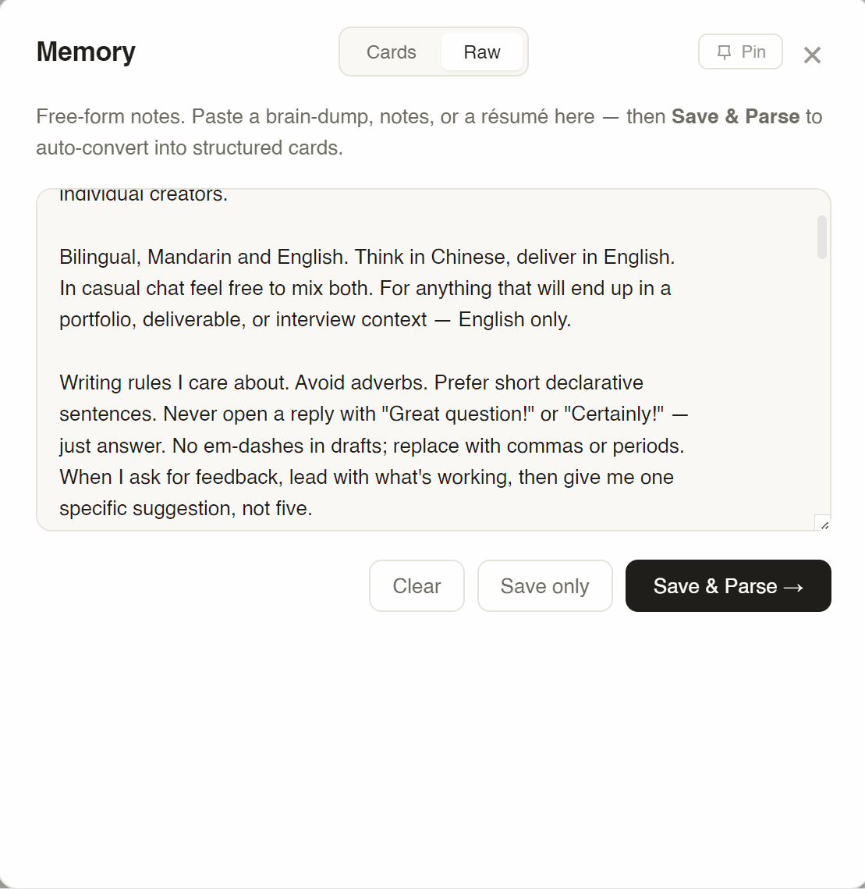
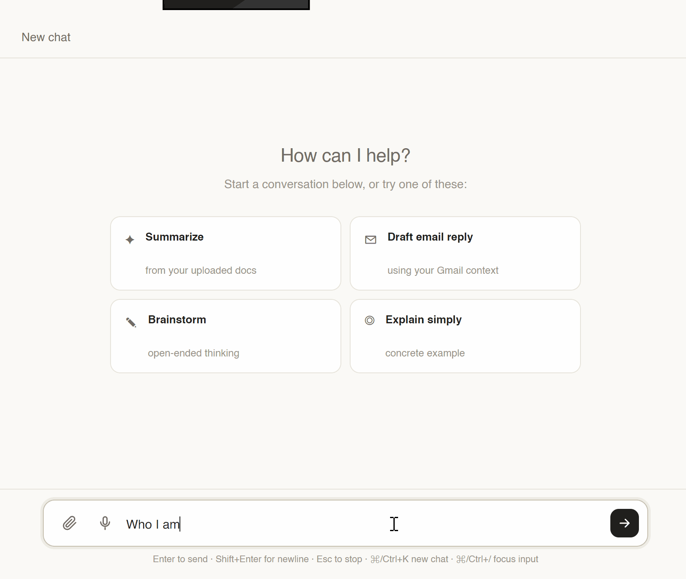
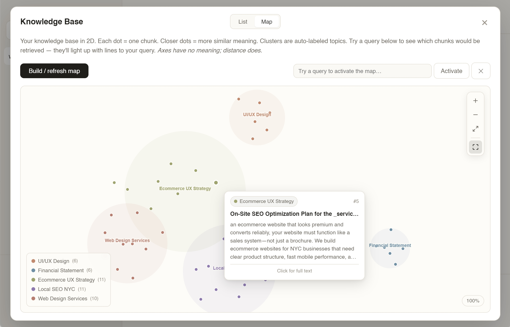
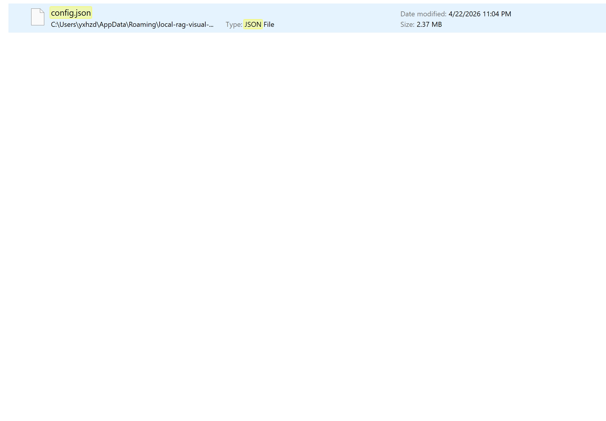

Memory you can toggle. Influence you can witness. A knowledge base you can walk through. Local-first, zero cloud, zero telemetry.
Upload PDFs → chunk & embed → build vector map → query "Dallas economy" → watch top-8 relevant chunks light up while the rest fade out.

Single-turn Q&A works great. But using AI as a long-term thinking partner breaks on three opacities — none of which are about model capability.
Memory lists surface after the fact, flat, uncategorized. No situational toggles. "Use this tone for work, not personal" has no affordance.
Users don't know which memories or documents shaped a reply. Output feels like luck. Users over-trust or under-trust — neither is good UX.
Uploaded files become a name in a sidebar. A 300-page PDF and a one-line note look the same. The knowledge base is a black bag.
I didn't map this app out and then build it. I built the simplest version I could, used it myself, noticed what sucked, fixed that one thing, used it again. Five rounds later, the four design moves on the next page are what was left standing.
A plain chat box. Type a question, get a reply. No files, no memory, nothing saved between sessions.
WHY THAT WASN'T ENOUGHEvery time I opened it, it had forgotten everything. If I told it Monday "I'm a designer working on a music app," on Tuesday it had no idea who I was. Great for one-off questions. Useless as a thinking partner.
Drag in a PDF, a résumé, meeting notes — the AI would actually read them and use them when answering. I also added a little "Sources" list under each reply so you could see where an answer came from.
WHY THAT WASN'T ENOUGHThe sources were broken. I'd ask "what's my identity?" and it would cite a random SEO doc. The same file got listed three or four times for the same answer — like filler. The "Sources" label looked like evidence but was really just noise. I couldn't trust my own app.
Little notes the AI always sees — organized by type. Who I am. Projects I'm working on. Preferences. Things I don't want it to do. Flip a card off when it doesn't apply to the current conversation.
WHY THAT WASN'T ENOUGHThe cards lived inside a separate pop-up window. Out of sight, out of mind. I'd write "keep replies under 3 sentences" and then have no way of knowing whether the AI was actually using that card on any given reply, or just ignoring it. The memory existed — but I couldn't see it working.
When the AI replied, the cards it had actually used would flash amber for about a second, like a little heartbeat. I also built a visual map of everything in the knowledge base — dots grouped into topic-clusters you could zoom and pan around.
WHY THAT WASN'T ENOUGHBoth of these lived inside pop-up windows. To see which card flashed, I had to click the Memory button, leave the chat, watch the flash, then come back to read the reply. The information was there — the cost of looking at it was too high. So I just stopped looking.
Small coloured tags directly under every AI reply, showing which memory cards it just used. Hover one to preview the content. Click it to edit the memory on the spot. For sources: only show a file if it's actually relevant to the question, and never the same file twice.
WHAT CHANGEDI can now glance at a reply and know why the AI said what it said — without ever leaving the chat. Sources became real evidence again instead of noise. The four design moves on the next page (Structure, Surface, Navigate, Retain) are the ones that earned their place after surviving all of this.
The same pattern kept showing up: the feature would work fine in the code, but I'd stop noticing it existed. The fix was almost never "build something new" → it was "move the thing I already built closer to where I'm actually looking."
Turn hidden memory into a deck of typed, toggleable cards. User curates, model respects.
Animate the invisible. A 900ms amber pulse shows which memories fired — without stealing attention from the answer.
Project embeddings to 2D. Make latent space a place users can pan, zoom, and query — not a lookup table.
Store everything locally in one deletable folder. Trust through architecture, not policy copy.
Move inference on-device via Ollama. The cloud becomes optional, not required.
Six typed categories. identity · project · preference · taboo · style · general. Chosen after testing free-form tags (sprawled to 40+ in a week) and three broad buckets (too coarse — preferences and taboos behave differently at prompt-injection time). Six was the smallest set the model actually respected.
A parse-paste flow. User pastes a messy brain-dump. One LLM call turns it into cards. User reviews, edits, toggles. 30-minute setup → 30 seconds.

After every reply, the app embeds the response and cosine-scores it against every enabled card. Top cards pulse amber for ~900ms. No numbers, no citation popup — just a quiet witnessable cue: these memories shaped this answer.
Killed the citation list. An earlier version listed "memories used" under each reply. Accurate but ugly — and it trained users to read the footnote instead of the answer. Ambient pulse > explicit citation when the user's primary task is reading.

Every chunk: embedded (1,536-D), projected via UMAP to 2D, k-means clustered, LLM-labeled. Every dot is a chunk. Every color is a topic. RAG becomes navigation, not retrieval.
Interactions: cursor-anchored wheel zoom, click-drag pan with 5px click/drag threshold, rich hover tooltip with match-% bar, query mode that highlights top-K with connecting lines, fullscreen, keyboard shortcuts (+/−/0/F). Map first. Text second.

All state — every conversation, memory card, KB vector, Gmail credential, API key — lives in one 2.4 MB JSON file on the user's machine. No backend. No account. No sync. No telemetry. The only network traffic is the explicit API call the user configured.
Delete the file = complete reset. That clarity is the feature. The best trust signal is a file the user can delete.

v1 was local-first data but cloud-first inference. v1.2 closed the loop. Chat, embeddings, memory parsing, and cluster labeling all run via Ollama on the user's machine. The cloud became optional, not required.
Anthropic and OpenAI remain selectable in Settings — for users who want top-tier reasoning. But the default install path is now zero keys, zero accounts, zero outbound traffic. Privacy users no longer have a "but."
via Ollama, on-device. ~10–15 tok/s on CPU · streaming.
via Ollama, on-device. 768-dim · ~270MB · powers RAG + Map + firing pulse.
on-device. format:'json' · strict schema, no drift.
I didn't make this local-first because it's faster — it isn't. I made it local-first because the people I want to use this care more about privacy than latency.
Every design choice is a killed alternative. The ones worth naming:
| Decision | Chose | Ruled out |
|---|---|---|
| Projection | UMAP — stable under re-embedding, preserves global structure. | t-SNE rebuilds layout each run (breaks mental map). PCA smears semantics. |
| Memory schema | Six fixed categories — forces a productive decision: preference or taboo? | Free-form tags sprawl to 40+ labels. Three buckets are too coarse. |
| Explainability UX | Ambient firing pulse — available, not intrusive. | Citation list trained users to read the footnote instead of the answer. |
| Data architecture | Local-first — delete = reset. Zero breach surface. | Cloud sync brings accounts, TOS, vendor lock-in. |
The firing pulse explains memory influence in a way no citation list ever did. Motion can describe state-change without stealing attention.
Once you can pan and zoom through your own knowledge, you stop treating it as "files" and start treating it as territory. RAG becomes navigation.
No policy copy outperforms a single 2.4 MB file the user can put in the trash. Architecture as trust signal.